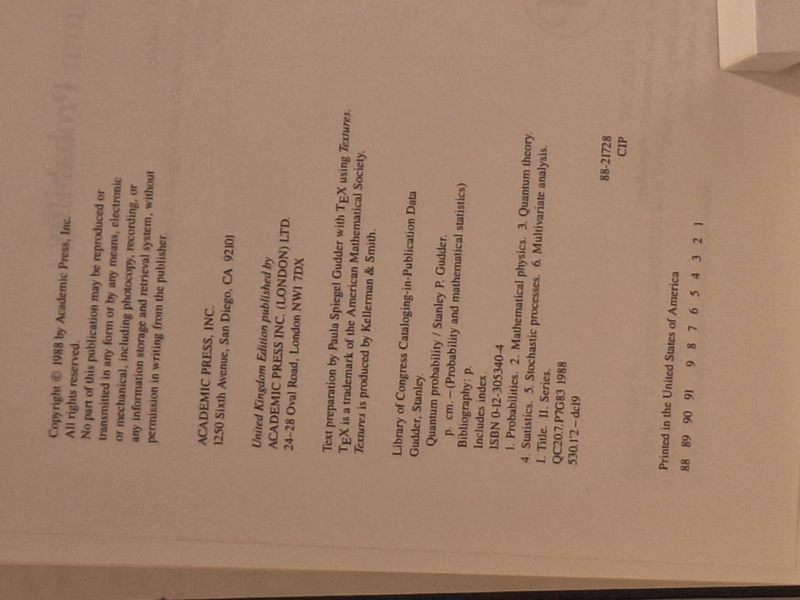

Quantum Probability
Stanley P. Gudder · Academic Press, San Diego, 1988

C$110 · Very Good condition
'Quantum Probability' by Stanley P. Gudder (University of Denver). Academic Press, 1988; first edition, in the 'Probability and Mathematical Statistics' series. A graduate-level monograph developing the probabilistic foundations of quantum mechanics - quantum logics, operational statistics, amplitude functions, hidden-variable questions and quantum stochastic processes. Blue cloth hardcover, issued without dust jacket. Boards clean and square with bright gilt spine lettering; a small ink mark to the front board; text block clean and unmarked. A sound Very Good copy of a scarce academic title.
Details
- Publisher: Academic Press, San Diego, 1988
- Binding: Hardcover
- Edition: First Edition (1988)
- Condition: Very Good
- ISBN: 9780123053404
- Category: Mathematics